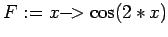
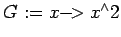
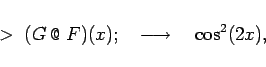
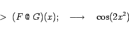

Inhalt Index DeskTop Bronstein

 Computeralgebrasysteme Maple Prozeduren, Funktionen und Operatoren
Computeralgebrasysteme Maple Prozeduren, Funktionen und Operatoren


Funktionaloperatoren sind Spezialformen von Prozeduren. Sie dienen als Anweisungen zur Manipulation und Kombination von Funktionen (Prozeduren). Mit Operatoren kann man nach den üblichen Regeln arbeiten. Summe und Differenz zweier Operatoren sind wieder Operatoren. Bei der Multiplikation ist zu beachten, daß darunter die Hintereinanderanwendung beider Operatoren zu verstehen ist. Maple benutzt dafür das spezielle Multiplikationssymbol . Diese Multiplikation ist im allgemeinen nicht kommutativ.
| Beispiel |
|
Es sei  und . Dann gilt 

|
Will man das Produkt zweier Funktionen bilden, die in Operatordarstellung gegeben sind, so benutzt man die Schreibweise (F*G)(x)=(G*F)(x), die F(x)*G(x) liefert.